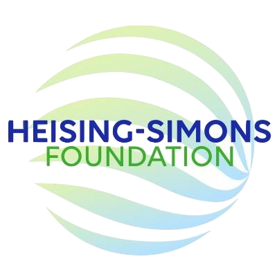
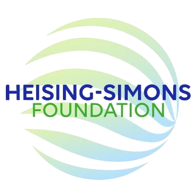
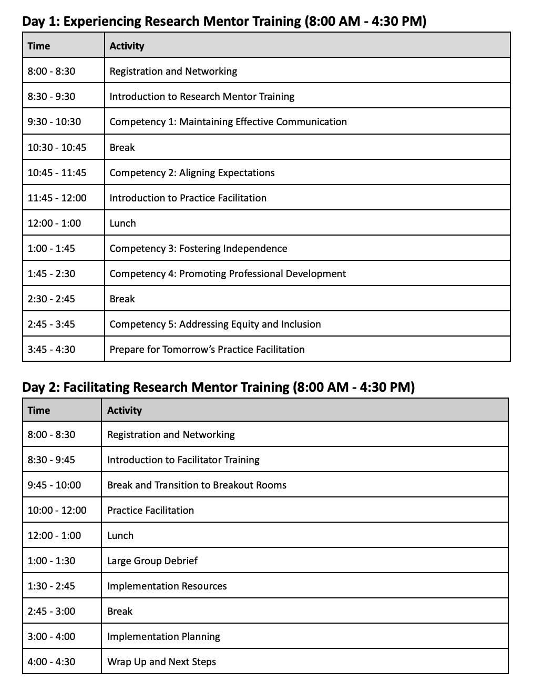

Welcome
Join the LSST TVS Mentor Training Program.
Because mentorship can be so influential in shaping the future STEMM workforce, its occurrence should not be left to chance or idiosyncratic implementation. (The Science of Effective Mentoring in STEMM)
 

Fast Facts
TVS is recruiting 3 participants to attend the 2-day workshop at the CIMER center to learn how to lead culturally-responsive, evidence-based mentorship trainings. Participants will co-facilitate three virtual mentorship trainings for TVS and LSST over the following two years, and receive an honorarium.
For more information contact the Program Coordinator, Shar Daniels (shard at udel dot edu or on the LSSTC slack).
Dates
August 14-15, 2024
Location
University of Wisconsin-Madison
Funding
- CIMER training: $2500
- Travel support: $1900
- Honorarium for hosting trainings: $300/training (three remote training sessions are expected)
- Total support per participant: $5300
Commitment
Co-facilitate three virtual mentorship trainings for TVS and LSST over the following two years.
Training program info
CIMER Center - Facilitating Entering Mentoring for Institutional Teams
Application
Apply here by April 1st!
Motivation
Mentoring is a skill that, like all skills, must be learned. Most academic institutions do not have structures in place to train mentors in effective mentorship practices; to cite The Science of Effective Mentoring in STEMM,
“Because mentorship can be so influential in shaping the future STEMM [science, technology, engineering, mathematics, and medicine] workforce, its occurrence should not be left to chance or idiosyncratic implementation. There is a gap between what we know about effective mentoring and how it is practiced in higher education”.
Well-intentioned scientists may make mistakes that can impact a junior scientist's career trajectory and retention. This can make the task of mentoring become daunting, especially for a conscientious prospective mentor. It is especially difficult when mentoring is unstructured, when mentors do not have access to training, when mentors are not instructed in how to measure the impact of their mentoring or assess the needs of their mentees, and when mentors aren't certain how to structure their mentorship activities so that they are effective but can fit within their other academic responsibilities.
What Makes Mentoring Effective?
“The success of mentoring relationships lies in the skills and knowledge of the mentors; yet this also requires developing professional–personal relationships” (The Science of Effective Mentoring in STEMM).
We are proud to offer TVS members the opportunity for professional mentorship training! Thanks to the support of the LSST Disocovery Alliance through a Heising-Simons foundation grant, we will be able to support the costs of training and travel for three TVS members. The participants will then give back to TVS and LSST by running three remote workshop where more mentors can be trained, generating a self-sustaining community of care and knowledge for mentors and mentees.
Program information
Workshop Overview

From the CIMER Center:
"During this two day “train-the-trainer” workshop from August 14-15, 2024, participants are introduced to Entering Mentoring, a mentor training curriculum that addresses the following key topics: maintaining effective communication, aligning expectations, addressing equity and inclusion, articulating your mentoring plan, assessing understanding, fostering independence, and promoting professional development.
Participants will learn evidence-based approaches to implementing this mentor training curriculum and gain the knowledge, confidence, and facilitation skills needed to design and implement the training at their institution or organization."
“Facilitating Entering Mentoring for Institutional Teams” is designed for those institutions or organizations that are ready to invest in a group of individuals (3-5 people) being trained to deliver culturally responsive mentorship education locally. Each team will work collaboratively throughout the workshop to prepare to meet their implementation goals. "
Requirements
- Participants must be "faculty, instructors, staff, or administrators, working with mentors whose trainees are undergraduate students, graduate students, postdocs, or junior faculty," from the CIMER center.
- Participants must legally be able to receive money from a US organization that is not their home institution (please check that this is allowed by your visa status and tax status).
- Participants must arrange their own travel, and will recieve a fixed amount of travel support.
- Participants must co-host three future virtual mentor trainings for TVS and LSST.
Apply Now
Questions? Email or slack Shar Daniels, coordinator, shard at udel dot edu.